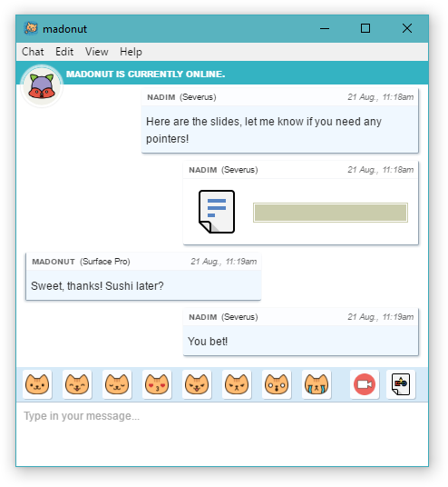

Conversa con tus amigos de manera segura.
Cryptocat es software libre con una misión muy simple: cualquiera debería ser capaz de conversar con sus amigos en privado.
- Código abierto. Todo el software de Cryptocat está publicado de manera transparente.
- Cifrado por defecto. Cada mensaje es cifrado, siempre.
- Seguridad extrema. Las conversaciones están a salvo incluso si tus claves son robadas.
- Múltiples dispositivos. Los dispositivos reciben los mensajes incluso cuando estás sin conexión.
- Compartir archivos. Comparte archivos con tus amigos de manera segura.